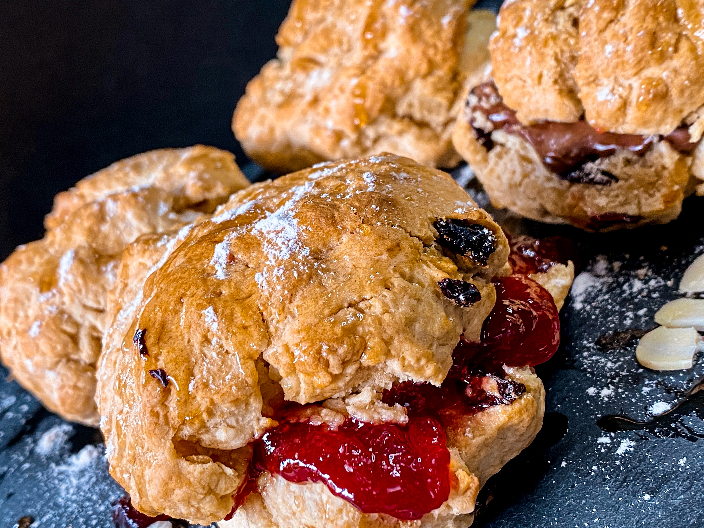

Occasinally maligned and misunderstood; the scone is a quintessentially British classic.

Incredible scones, picture from wikepedia
Recipe and serving suggestions folow.
Ingrediants
350g self-raising flour, and a little spare for dusting
1/4 tsp salt
1 tsp baking powder
85g butter, cut into cubes
3 tbsp caster sugar
175ml milk
1tsp vanilla extract
squeeze lemon juice
beaten egg, to glaze
jam and clotted cream, to serve
Method
Heat the oven to over 220oC (or gas mark 7). Tip the flour into a large bowl along with the salt and baking powder, then mix it all up. Add the butter in, then rub the butter in with your fingers untill the mix looks like fine crumbs. When that is done, stir in the sugar.
Put the milk into a jug and heat in the microwave for about 20-30 seconds. It should be warm but not hot. Add the vanilla and lemon juice to the the milk and thrn put that to one side and put a baking tray into the warm oven